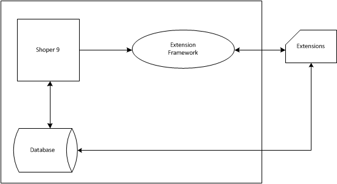

The Extension Framework is an intermediate layer between Shoper 9 and any customised extensions.
The following pictorial representation gives the Integration of Extension Framework in Shoper 9.

As shown in the diagram, any data transfer between the customised extensions and Shoper 9 application are carried out through the framework. The extensions are also allowed to communicate with the Shoper database, without changing the standard operations. The framework allows to plug-in extensions in those transactions in Shoper 9 which supports extensions. The role of Extension Framework differs based on the type of extensions.